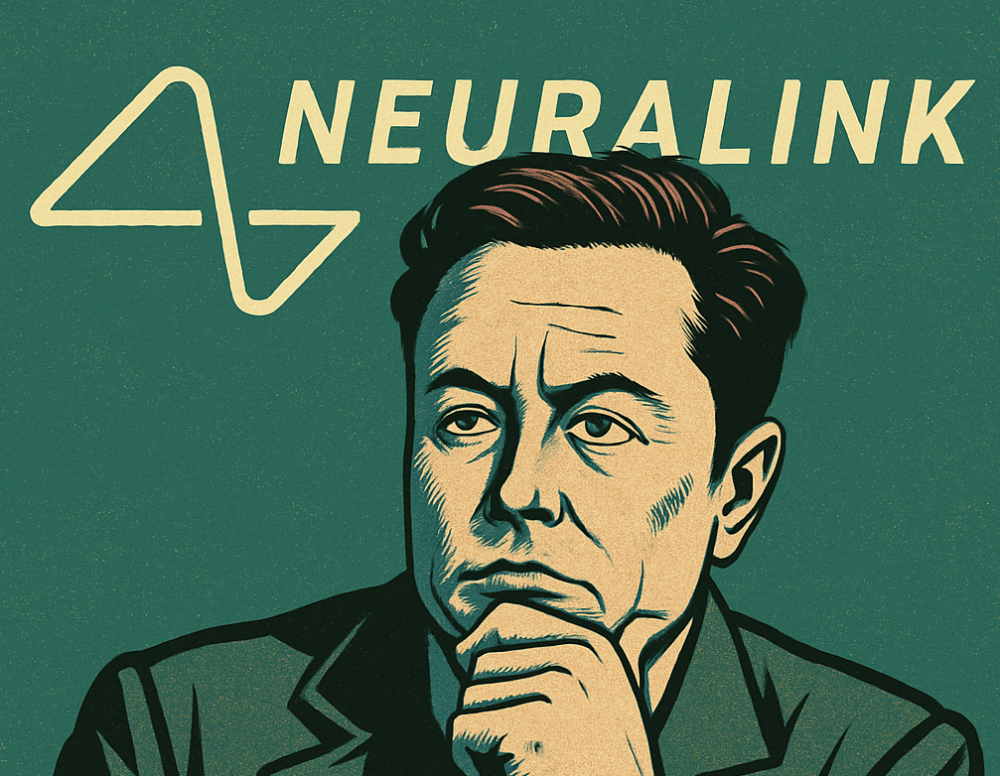

Neuralink : contrôler un ordinateur par la pensée devient réalité
Publié le 7 mai 2025

Et si l’on pouvait publier une vidéo YouTube sans toucher ni clavier ni souris, simplement par la pensée ? Ce qui relevait hier encore de la science-fiction est désormais possible. Bradford Smith, un patient paralysé atteint de la maladie de Charcot (ALS), est devenu le troisième humain à recevoir un implant Neuralink. Grâce à cette interface cerveau-machine développée par l’entreprise d’Elon Musk, il a pu éditer et publier une vidéo en ligne uniquement par la force de l’esprit. Pour la narration, une intelligence artificielle a recréé sa propre voix à partir d’enregistrements réalisés avant sa perte de parole. Ce témoignage saisissant montre à quel point la frontière entre l’homme et la machine s’amincit.
Une technologie qui lit les signaux du cerveau
La technologie de Neuralink repose sur une puce implantée directement dans le cortex moteur. Cette interface capte les signaux neuronaux et les transmet sans fil à un ordinateur. Dans le cas de Bradford Smith, les ingénieurs ont affiné le système en l’associant à l’imagerie mentale de mouvements de la langue, permettant un contrôle plus précis du curseur. L’implant, inséré avec une extrême précision par un robot chirurgical, vise à minimiser les risques liés à l’opération. Relié à un MacBook Pro, l’ensemble fonctionne en temps réel, offrant aux patients un contrôle direct de l’environnement numérique, que ce soit pour écrire, créer ou simplement interagir.
Une frontière floue entre progrès et éthique
Mais au-delà des prouesses techniques, c’est une foule de questions qui surgit. Quels seront les usages futurs de cette technologie ? Offrir une autonomie nouvelle aux personnes paralysées ou... permettre à tout un chacun d'interfacer son cerveau avec des machines ? Jusqu’où sommes-nous prêts à aller dans cette fusion homme-machine ? En accédant à nos pensées les plus profondes, ces implants posent des enjeux majeurs en matière de vie privée, de sécurité et de consentement. Qui possédera les données cérébrales ? Qui en assurera la protection ? Neuralink ouvre une porte fascinante, mais dérangeante. Une technologie révolutionnaire, certes — mais une révolution à encadrer avec autant de vigilance que d’enthousiasme.